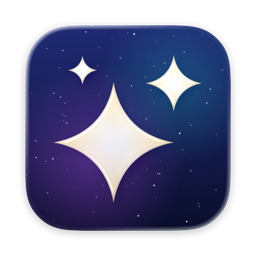

APOD Wallpaper
NASA's picture of the day, Live Earth or the night sky, as your wallpaper.
More
Sets your wallpaper to NASA's Astronomy Picture of the Day, the latest whole-Earth satellite picture, a star chart drawn for where you are, or a solid colour.
Internet: To fetch NASA's picture and the satellite images